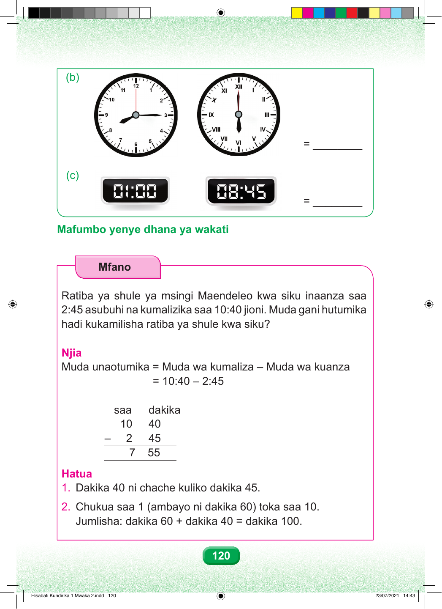

(b) = ________ (c) = ________ Mafumbo yenye dhana ya wakati Mfano Ratiba ya shule ya msingi Maendeleo kwa siku inaanza saa 2:45 asubuhi na kumalizika saa 10:40 jioni. Muda gani hutumika hadi kukamilisha ratiba ya shule kwa siku? Njia Muda unaotumika = Muda wa kumaliza – Muda wa kuanza = 10:40 – 2:45 saa dakika 10 40 – 2 45 7 55 Hatua 1. Dakika 40 ni chache kuliko dakika 45. 2. Chukua saa 1 (ambayo ni dakika 60) toka saa 10. Jumlisha: dakika 60 + dakika 40 = dakika 100. 120 Hisabati Kundirika 1 Mwaka 2.indd 120 23/07/2021 14:43